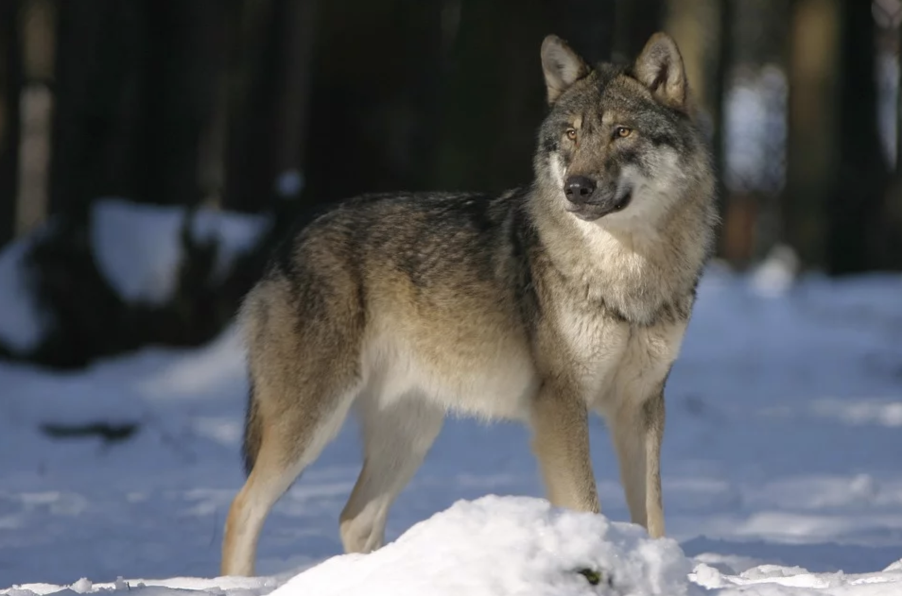

Det är viktigt att vi håller koll på rovdjuren i Sverige för att exemplet i Yellowstone inte ska hända igen. Hittills har vi pratat om vargen men det är viktigt att poängtera att björn, järv, kungsörn och lodjur också är rovdjur som har en viktig roll i ekosystemet. I Sverige har Länsstyrelsen koll på rovdjuren. Länsstyrelsen har ansvaret att de håller sig till samma antal så att det ska finnas en balans i naturen. Det är därför även viktigt att se till så att vargarna inte splittrar och bildar flera nya grupper. För att Länsstyrelsen ska ha koll på vargarna och se till så att de har en säker plats i Sverige är det inte tillåtet att skjuta något slags rovdjur.  Om någon skulle bli attackerad är det fortfarande inte tillåtet att skjuta djuret. I detta fall ringer man Länsstyrelsen som hjälper till. Den jakt som sker är endast skyddsjakt och licensjakt av Länsstyrelsen. Investeringen när det kommer till Sveriges rovdjur samt reglerna om den begränsade jakten är nödvändigt för ekosystemet.
Text av: Simone Sundström